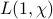
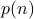

Project WorkMaster's ThesisSupervised by: Dr. Somnath Jha, Dept. of Mathematics and Statistics There were two parts to my thesis, submitted towards the completion of the requirements of the Master of Science degree. The copy of the thesis submitted to the IITK library is here. Part I: The Vinogradov Theorem (July 2015 — November 2015)I studied the Vinogradov theorem on the representation of sufficiently large odd integers as the sum of three primes. The theorem is an asymptotic weakening of the Odd Goldbach Conjecture (which was recently settled completely by Harald Helfgott). In the project, I considered a proof (originally due to Hardy and Littlewood) of the theorem under the assumption of the Generalized Riemann Hypothesis (GRH). Part II: Prime Numbers and Arithmetic Progressions (January 2016 — April 2016)This project was essentially to dismantle the classical proof of the prime number theorem in arithmetic progressions, which simultaneously generalizes the prime number theorem as well as Dirichlet's theorem, into modular pieces which were directly adapted from the individual proofs of these results. Essentially, the non-vanishing of  is precisely the ingredient that needs to be added to the proof of the PNT to achieve the theorem, just like Dirichlet's proof is precisely Euler's argument for Euclid's theorem with the same ingredient added. Undergraduate Projects (UGPs)Fourier Analysis on Finite Abelian Groups (July 2013 — November 2013)Supervised by: Prof. Shobha Madan, Dept. of Mathematics and Statistics In this project, I studied the Fourier theory of finite abelian groups from Stein and Shakarchi's Fourier Analysis: an Introduction culminating in the analytic proof of Dirichlet's theorem on the infinitude of primes in arithmetic progressions. Arithmetic Progressions in Sets of Integers (January 2014 — April 2014)Supervised by: Prof. Shobha Madan, Dept. of Mathematics and Statistics In this project, I read expository papers on the proof of Roth's theorem on the infinitude of 3-term APs in sets of positive density by Neil Lyall and Alex Iosevich with a goal toward understanding the basic structure versus randomness argument that occurs often in Additive Combinatorics. Additive Combinatorics and Incidence Geometry: The Kakeya Problem (July 2014 — November 2014)Supervised by: Dr. Nitin Saxena, Dept. of Computer Science and Engineering I did this project jointly with Mr. Vijay Keswani, an undergraduate student of the Dept. of CSE, IIT Kanpur. We considered the state–of–the–art with respect to the status of the Kakeya problem in various geometries with different underlying fields, particularly the finite field and the real settings. We had a small reading group going including Prof. Shobha Madan (MTH), Dr. Nitin Saxena (CSE), Dr. Rajat Mittal (CSE), Vijay and me, in which Vijay and I would give weekly talks on topics in Additive Combinatorics and Indicidence Geometry. Talks I gave included an exposition of Zeev Dvir's solution for the problem in the finite field setting using the polynomial method along with some discussion on the best known bounds in the real setting and their proofs. The final project presentation can be seen here. Additive Combinatorics and Szémeredi’s Regularity Lemma (January 2015 — April 2015)Supervised by: Dr. Rajat Mittal, Dept. of Computer Science and Engineering Szémeredi’s regularity lemma is a fundamental tool in graph theory and additive combinatorics which lets us extract “randomness” results from sufficiently large graphs. This project was also done jointly with Vijay, and we considered a proof of the lemma along with various applications. The final project presentation can be seen here. This includes certain applications not considered in the project report. Other ProjectsThe Hidden Subgroup Problem (January 2016 — April 2016)Supervised by: Dr. Rajat Mittal, Dept. of Computer Science and Engineering In this project, I studied the Hidden Subgroup Problem, a problem from computer science, which attempts to efficiently determine a subgroup of a group which is “hidden” by a function, in the sense that the function is constant on the cosets of that subgroup. An efficient quantum algorithm for the general HSP will lead to a solution a number of problems which are currently not known to have one, and the quantum speedup in the discrete log problem and the factoring problem are both based on the ability of a quantum computer to solve the HSP for Abelian groups. I understood the quantum algorithm for Abelian HSP, as well as some non-Abelian contexts in which a similar algorithm works. The Bombieri-Vinogradov Theorem (May 2013 — July 2013)Supervised by: Prof R. Balasubramanian, Director, Institute of Mathematical Sciences, Chennai This was summer project in number theory that I did for Science Academies’ Summer Research Fellowship. I attended various lectures on algebraic and analytic aspects of number theory given by research fellows, and self-studied basic analytic number theory with an eye towards the recent progress by Yitang Zhang towards the twin prime conjecture. I read and understood a proof (using the large sieve) of the Bombieri-Vinogradov theorem, a basic tool in Zhang's proof, which is essentially an “averaged” formulation of the Generalized Riemann Hypothesis, and is useful in situations where the proof that a conjecture follows from GRH requires that GRH be true only on average over various Dirichlet characters; in some situations, this tool can be used to give an unconditional proof of a theorem (as it is used in the works of Goldston, Pintz, and Yıldırım; and Zhang, Maynard, Tao and Polymath 8). Partitions and Rademacher's Exact Formula (June 2012 — July 2012)Supervised by: Dr. Amitabha Tripathi, Dept. of Mathematics, Indian Institute of Technology, Delhi This was a reading project on the theory of additive partitions of natural numbers done jointly with Mr. Rijul Saini, an undergraduate of mathematics from the Chennai Mathematical Institute. We read the relevant portions of the two books by Apostol, namely Introduction to Analytic Number Theory and Modular Functions and Dirichlet Series in Number Theory, in order to understand the proof of Rademacher's remarkable exact formula for , using the Hardy-Littlewood circle method. |